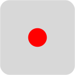
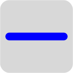
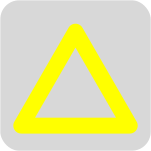
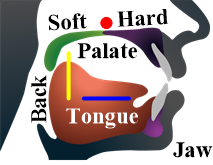
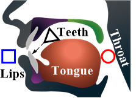

HUNDLISM*
The Hundli theory, or Hundlism, condenses articulatory phonetics and design principles of Hangul into the trilateral process and reality of the nature (FIG. 1). The Hun·dl·i, a trisyllable compound word of (Hun [hʌn]), 들 (Dl [dɯl]), and 이 (I [i]) in Korean, is coined to depict the universal dynamics of the world as a whole. First, in Korean means the sky, a symbol of the diverging process or derived thing. Second, 들 means the flat ground, a symbol of the converging process or basic thing. Third, 이 means a person or thing, a symbol of the living thing in harmony, which represents the binding or balance of Hun and Dl.
| Pattern | Process | Reality | Name |
|---|---|---|---|
| Diverging | Derivative | | |
| Binding | Composite | 이 | |
| Converging | Basis | 들 |
SPEECH PRODUCTION
The Hundlism models the trilateral structure of a speech syllable in which the sound forms, lasts, and diminishes in time. In particular, the Hundli pattern outlines the trilateral structure of a speech syllable or segment with opening, lasting, and closing sounds on the falling time axis in FIG. 2.
LETTER AND SOUND FORMATION
In its dual sense of process and reality, the Hundlism can give a fresh insight into the bilateral or trilateral symmetries between articulatory phonetics and design principles of Hangul. First, the trilateral structure of a graphic syllable on paper reflects that of a speech syllable in time based on the processing aspect of the Hundlism. Second, the substantial aspect of the Hundlism manifests the trilateral symmetries in graphoneme formation processes.
HANGUL GEOMETRY
The simplest geometric symbols on paper include geometric primitives (a dot, horizontal line, and vertical line) and basic shapes (a circle, square, and triangle). Three primitives of the world, in Korean traditional philosophy, include the round sky, flat earth and upright man in-between. Their symbols are intuitively defined to outline the three primitives in the world by geometric primitives, i.e., dot and lines as well as basic shapes, i.e., circle, square, and triangle.
|
world letter |
sky | earth | man | alphabet |
|---|---|---|---|---|
| primitives |  |  | vowels | |
| shapes |  | consonants |
HANGUL DESIGN*
The basic vowel graphemes outline the vocal organs in the right articulatory profile with geometric primitives while the basic consonant graphemes outline the vocal organs in the left articulatory profile by the basic shapes. The additive principle of vowel letters should be defined by clear articulatory phonetic features. The composition principle for both consonants and vowels is rather straightforward once we have enough basic letters.
| Articulatory Profile | Geometric Primitives | Trilateral Formation |
|---|---|---|
|  | ||
|  |